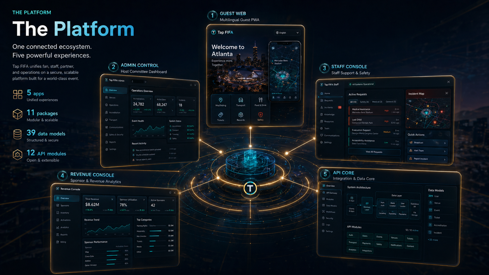

How data moves through the system — from a fan's first text message to a culturally-targeted sponsor placement, with safety overrides at every layer.
Four frontend surfaces, one API gateway, shared data stores, and the Telnyx telecom bridge — all running from a single monorepo.
A fan opens the web app, selects their language, asks a question, and receives a culturally-aware, sponsor-eligible response.
A fan texts or calls the event number. Telnyx routes to the API, which detects language, classifies intent, and sends a response — all without downloading an app.
Safety always wins. When a fan triggers an emergency phrase, the system bypasses all AI and sponsor logic and delivers deterministic, pre-approved safety responses.
Revenue doesn't interrupt the experience — it enhances it. Sponsors are matched by language, culture, intent, and location, then injected transparently.
Passive sponsor placements in concierge responses, map cards, and search results. Lowest touch, broadest reach.
Contextual sponsor recommendations matched to team cultural profiles. Restaurant partnerships, cultural venues, language-specific offers.
Interactive challenges, QR scavenger hunts, match-day passport stamps. Highest engagement, premium pricing.
Every concierge response is assembled from typed tool calls, vector-ranked sources, and a safety-first scoring pipeline.
Guest Web, Admin, Staff Console, Revenue Console — plus SMS and Voice via Telnyx
NestJS with 12 domain modules, Swagger, rate limiting, audit logging
Typed tools for every data domain: matches, venues, culture, sponsors, safety
Prisma 6 schema covering users, events, sponsors, telecom, rewards, and emergencies
Full translation coverage with RTL support, fallback merging, and approved phrases
Emergency phrases bypass all AI — deterministic, pre-approved, no hallucination
